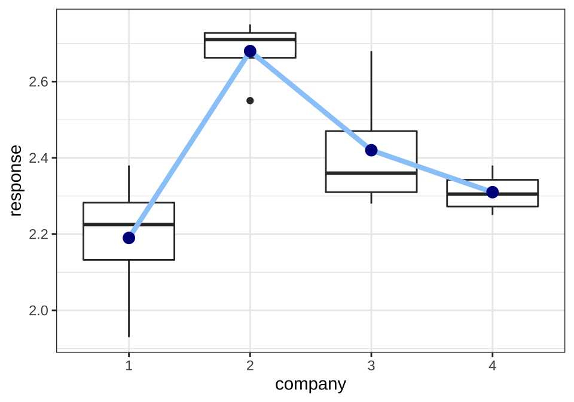
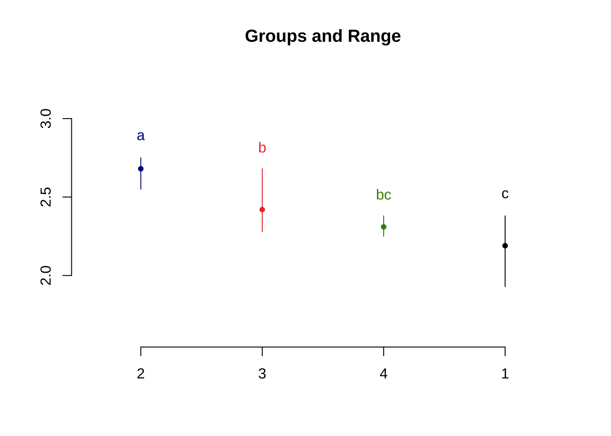

제 4 장 분산분석
4.1 모형과 가설
집단의 모평균을 편의상 \(\mu_1, \mu_2, \cdots, \mu_a\) 이라고 하자. 평균모형 (3.1)을 가정하고 집단들 사이에 차이가 있는지에 대한 가설은 다음과 같다.
\[ H_0: \mu_1 = \mu_2 =\dots =\mu_a \quad \text{vs.} \quad H_1: \text{ not } H_0 \]
위의 가설에서 주의할 점은 대립가설 \(H_1\)의 경우애 평균들이 서로 다른 경우가 매우 다양다는 것이다. 예를 들어 집단이 3개 인 경우 \(\mu_1 = \mu_2 < \mu_3\)일 수 도 있고 \(\mu_1 < \mu_2 < \mu_3\) 있으며 이 외에 매우 다양한 경우들이 있다.
이제 효과모형 (3.2)을 고려하면 집단들 사이에 차이가 있는지에 대한 가설을 다음과 같이 바꿀수 있다. 집단에 대한 효과가 모두 0이 되면 집단 간의 평균에 대한 차이는 없다.
\[\begin{equation} H_0: \alpha_1 = \alpha_2 =\cdots=\alpha_a =0 \quad \text{vs.} \quad H_1: \text{ not } H_0 \tag{4.1} \end{equation}\]
4.2 변동의 분해
이제 앞 절에서 생각해본 t-검정의 재구성처럼 집단 간의 변동(각 집단의 평균의 차이가 얼마나 나는지에 대한 통계량)과 집단 내의 변동(각 집단내에서 관측값들의 퍼진 정도)를 측정하는 통계량을 찾아서 검정 통계량을 구성해 보자.
일단 다음과 같이 전체 평균과 집단의 평균을 정의하자.
\[ \bar{\bar {x}} = \frac{\sum_{i=1}^a \sum_{j=1}^r x_{ij}}{ar} =\frac{T}{ar}, \quad \bar {x}_{i.} = \frac{\sum_{j=1}^r x_{ij}}{r} = \frac{T_{i.}}{r} \]
이제 하나의 관측값 \(x_{ij}\)과 전체 평균 \(\bar{\bar {x}}\) 간의 편차(deviation)를 다음과 같이 분해해 보자.
\[\begin{equation} \underbrace{ x_{ij} - \bar{\bar {x}} }_{\text{total deviation}} = \underbrace{ ( x_{ij} - \bar {x}_{i.} )}_{\text{within-group deviation}} + \underbrace{(\bar {x}_{i.} - \bar{\bar {x}} )}_{\text{between-group deviation}} \tag{4.2} \end{equation}\]
식 (4.2) 에서 집단 평균과 총 평균의 편차 (\(\bar {x}_{i.} - \bar{\bar {x}}\))는 처리의 효과를 측정할 수 있는 통계량이다. 집단 간의 차이를 반영하는 양으로 처리 효과 \(\alpha_i\)들에 의하여 발생한다.
집단 내의 관측값과 집단 평균의 차이 (\(x_{ij} - \bar {x}_{i.}\))는 집단 내의 변동을 나타내는 통계량으로 측정 오차 \(e_{ij}\)에 의하여 발생한다.
식 (4.2)의 각 편차들은 양수와 음수로서 부호를 가지기 때문에 이를 변동으로 표현하기 위하여 차이를 제곱하여 합친 제곱합(sum of squares)을 고려해 보자.
\[\begin{align*} \sum_{i=1}^a \sum_{j=1}^r (x_{ij} - \bar{\bar {x}})^2 & = \sum_{i=1}^a \sum_{j=1}^r \left [ ( x_{ij} - \bar {x}_{i.} ) + (\bar {x}_{i.} - \bar{\bar {x}} ) \right ]^2 \\ & = \sum_{i=1}^a \sum_{j=1}^r ( x_{ij} - \bar {x}_{i.} )^2 + \sum_{i=1}^a \sum_{j=1}^r (\bar {x}_{i.} - \bar{\bar {x}} )^2 + 2 \sum_{i=1}^a \sum_{j=1}^r ( x_{ij} - \bar {x}_{i.} ) (\bar {x}_{i.} - \bar{\bar {x}} ) \\ & = \sum_{i=1}^a \sum_{j=1}^r ( x_{ij} - \bar {x}_{i.} )^2 + \sum_{i=1}^a r (\bar {x}_{i.} - \bar{\bar {x}} )^2 + 0 (why?) \\ \end{align*}\]
결과적으로 다음과 같은 변동의 분해를 제곱합의 형식으로 얻을 수 있다.
\[\begin{equation} \underbrace{ \sum_{i=1}^a \sum_{j=1}^r (x_{ij} - \bar{\bar {x}})^2 }_{\text{total variation}} = \underbrace{ \sum_{i=1}^a \sum_{j=1}^r ( x_{ij} - \bar {x}_{i.} )^2 }_{\text{within-group variation}} + \underbrace{\sum_{i=1}^a \sum_{j=1}^r (\bar {x}_{i.} - \bar{\bar {x}} )^2 }_{\text{between-group variation}} \tag{4.3} \end{equation}\]
분해식 (4.3)에서 나타난 각 제곱합에 대한 이름과 의미를 살펴보자.
- \(SS_T\)를 총 제곱합(Total Sum of Squares)이라고 부르며 자료의 전체 변동을 의미한다.
\[ SS_T = \sum_{i=1}^a \sum_{j=1}^r (x_{ij} - \bar{\bar {x}})^2 \]
- \(SS_E\)를 잔차 제곱합(Residual Sum of Squares)이라고 부르며 관측 오차에 발생된 집단 내의 변동 또는 급내 변동(within-group variation)을 의미한다.
\[ SS_E = \sum_{i=1}^a \sum_{j=1}^r ( x_{ij} - \bar {x}_{i.} )^2 \]
- \(SS_A\)를 처리 제곱합(Treatment Sum of Squares)이라고 부르며 처리들의 차이로 발생하는 변동으로거 집단 간의 변동 또는 급간 변동(bwtween-group variation)을 의미한다.
\[ SS_A = \sum_{i=1}^a \sum_{j=1}^r (\bar {x}_{i.} - \bar{\bar {x}} )^2 =\sum_{i=1}^a r (\bar {x}_{i.} - \bar{\bar {x}} )^2 \]
이제 분해식 (4.3)을 다음과 같이 나타낼수 있다.
\[\begin{equation} SS_T = SS_A + SS_E \tag{4.4} \end{equation}\]
위의 분해식에서 볼 수 있듯이 집단 간의 변동의 크기를 나타내는 처리제곱합이 커질수록, 또는 집단내의 변동의 크기를 나타내는 오차제곱합이 작아질수록 귀무가설에 반대되는(즉, 집단 간의 평균이 유의한 차이가 난다는) 증거가 강해진다.
4.3 자유도
제곱합은 편차(deviation)의 제곱들을 더한 형태로서 각 제곱합들에 대하여 해당하는 자유도(degrees of freedom; df 또는 \(\phi\)로 표기)를 구할 수 있다.
제곱합의 자유도 = 제곱합을 구성하는 편차의 개수 – 선형제약 조건의 개수 각 제곱합에 대한 선형제약조건은 편차들의 합이 0이 되는 조건이다. 이제 식 (4.4)에 주어진 제곱합의 자유도에 대한 정보를 다음과 같이 정리할 수 있다.
| 제곱합 | 편차의 개수 | 제약조건 | 제약조건의 수 | 자유도 |
|---|---|---|---|---|
| \(SS_T\) | \(ar\) | \(\sum_{i=1}^a \sum_{j=1}^r (x_{ij} - \bar{\bar {x}})=0\) | 1 | \(\phi_T= ar-1\) |
| \(SS_A\) | \(a\) | \(\sum_{i=1}^a (\bar {x}_{i.} - \bar{\bar {x}} ) =0\) | 1 | \(\phi_A=a-1\) |
| \(SS_E\) | \(ar\) | \(\sum_{j=1}^r ( x_{ij} - \bar {x}_{i.} ) =0, i=1,2,..,a\) | a | \(\phi_E=ar-a\) |
4.4 평균제곱합과 F-통계량
이제 가설 (4.1)을 검정하기 위한 통계량을 구성해 보자. 먼저 다음과 같은 제곱합들을 각 자유도로 나눈 평균제곱합(Mean Sum of Squares)를 정의한다.
\[\begin{equation} MS_A = \frac{SS_A}{\phi_A}, \quad MS_E =\frac{SS_E}{\phi_E} \tag{4.5} \end{equation}\]
앞 절에서 t-검정을 재구성하면서 알아본 통계량의 의미를 다시 생각해 보자. 집단 간의 변동과 집단 내의 변동의 상대적 비율로 그룹 간의 차이를 검정할 수 있다는 개념을 확장하여 다음과 같은 F-통계량 \(F_0\) 를 만들어 보자.
\[\begin{equation} F_0 = \frac{MS_A}{MS_E} = \frac{\text{between-group variation}} {\text{within-group variation}} \tag{4.6} \end{equation}\]
위 식 (4.6)에서 정의된 F-통계량은 그룹 간에 평균의 차이가 클수록, 그룹 내의 차이가 작을 수록 그 값이 커진다. 따라서 F-통계량의 값이 크면 클수록 귀무가설에 반대되는 증거가 강해진다.
이렇게 전체의 변동을 집단 간의 변동과 집단 내의 변동으로 나누어 집단 간의 평균의 차이를 추론하는 방법을 분산분석(Analysis of Variance, ANOVA)이라고 한다.
4.5 분산분석을 이용한 F-검정
이제 식 (4.6)에서 정의된 F-통계량을 이용하여 가설 (4.1)를 검정하는 통계적 방법을 만들어 보자. 일단 두 제곱합의 통계적 성질은 다음과 같다.
잔차 제곱합을 오차항의 분산으로 나눈 통계량은 자유도가 \(\phi_E\) 를 가지는 카이제곱 분포를 따른다.
\[ \frac{SS_E}{\sigma_E^2} \sim \chi^2(\phi_E) \]
귀무가설이 참인 경우 처리 제곱합을 오차항의 분산으로 나눈 통계량은 자유도가 \(\phi_A\) 를 가지는 카이제곱 분포를 따른다.
\[ \frac{SS_A}{\sigma_E^2} \sim \chi^2(\phi_A) \quad \text{ under } H_0 \]
잔차 제곱합과 처리 제곱합은 서로 독립이다.
따라서 귀무가설이 참인 경우 F-통계량은 자유도가 \(\phi_A, \phi_E\)를 가지는 F-분포를 따른다.
\[\begin{equation} F_0 = \frac{MS_A}{MS_E} = \frac{ \tfrac{SS_A/\sigma_E^2}{\phi_A}} {\tfrac{SS_E/\sigma_E^2}{\phi_E }} \sim F(\phi_A, \phi_E) \quad \text{ under } H_0 \tag{4.7} \end{equation}\]
유의수준 \(\alpha\)에서 F-통계량이 기각역을 벗어나면 귀무가설을 기각한다.
\[ \text{ Reject } H_0 \text{ if } F_0 > F(1-\alpha, \phi_A, \phi_E) \]
또는 다음과 같이 게산된 p-값이 유의수준 \(\alpha\) 보다 작으면 귀무가설을 기각한다.
\[ p-value = P[F(\phi_A, \phi_E) > F_0 ] \]
F-통계량을 정의할 때 편리하고 유용하게 사용되는 것이 다음과 같은 분산분석표(ANOVA table)이다.
| 요인 | 제곱합 | 자유도 | 평균제곱합 | \(F_0\) | p-값 |
|---|---|---|---|---|---|
| 처리 | \(SS_A\) | \(\phi_A = a-1\) | \(MS_A=SS_A/\phi_A\) | \(F_0=MS_A/MS_E\) | \(P[F(\phi_A, \phi_E) > F_0 ]\) |
| 잔차 | \(SS_E\) | \(\phi_E=a(r-1)\) | \(MS_E=SS_E/\phi_E\) | ||
| 총합 | \(SS_T\) | \(\phi_T = ar-1\) |
4.6 분산분석 후의 추정
분산분석에서 고려한 요인 A의 수준에 따라서 반응값의 평균에 유의한 차이가 있다고 결론이 나면 그룹 간의 모평균을 차이에 대한 더 자세한 정보가 필요하다. 즉 집단들의 평균이 서로 유의하게 다르거나 같은지에 대한 정보를 얻는 것이 중요하다.
일단 모집단의 분산 \(\sigma_E^2\) 에 대한 추정은 잔차제곱합의 분포를 이용하면 다음과 같은 불편추정량을 얻을 수 있다.
\[ \hat \sigma_E^2 = MS_E, \quad E(MS_E) = \sigma_E^2 \]
다음으로 각 수준(집단)에 대한 평균에 대한 추정량은 표본평균 \(\bar {x}_{i.}\) 이며
\[ \hat \mu_i = \widehat {\mu + \alpha_i} = \bar {x}_{i.} \quad E(\bar {x}_{i.}) =\mu_i \]
\(100(1-\alpha)\) % 신뢰구간(confidence interval)은 다음과 같이 주어진다.
\[ \bar {x}_{i.} \pm t(1-\alpha/2, \phi_E) \sqrt{ \frac{MS_E}{r}} \]
야기서 \(t(1-\alpha/2, \phi_E)\)는 자유도 \(\phi_E\)를 가지는 t-분포의 \(1-\alpha/2\) 분위수를 의미한다.
이제 두 개의 수준에 대한 평균의 차이에 대한 통계적 추론을 생각해 보자. 수준 \(A_i\)와 \(A_j\)의 평균의 차이에 대한 추정과 검정을 하려고 한다.
\[ \delta_{ij} = \mu_i-\mu_j = \alpha_i - \alpha_j \]
두 평균의 차이 \(\delta_{ij}\) 에 대한 \(100(1-\alpha)\) % 신뢰구간은 다음과 같이 주어진다.
\[\begin{equation} ( \bar {x}_{i.} - \bar {x}_{j.}) \pm t(1-\alpha/2, \phi_E) \sqrt{ \frac{2MS_E}{r}} \tag{4.8} \end{equation}\]
신뢰구간 (4.8) 에서 두 개의 표본 평균 \(\bar {x}_{i.}\)와 \(\bar {x}_{j.}\) 은 서로 독립인 것에 유의하자.
이제 마지막으로 두 평균의 차이 \(\delta_{ij}\) 에 대한 가설을 검정하여고 한다.
\[ H_0 : \alpha_i = \alpha_j \quad \text{ vs. } \quad H_1: \alpha_i \ne \alpha_j \]
유의 수준 \(\alpha\)에서 다음과 같은 조건을 만족하면 위의 귀무가설을 기각한다.
\[\begin{equation} \left | \bar {x}_{i.} - \bar {x}_{j.} \right | > t(1-\alpha/2, \phi_E) \sqrt{ \frac{2MS_E}{r}} \tag{4.9} \end{equation}\]
식 (4.9)에서 주어진 귀무 가설 \(\delta_{ij}=0\) 을 기각하는 조건은 식 (4.8) 에 주어진 신뢰구간이 0 을 포함하지 않는 조건과 동일하다.
식 (4.9) 에서 검정을 위한 조건의 우변을 최소유의차(least significant difference; LSD) 라고 부른다. 두 수준의 차이가 유의하려면 두 평균 차이의 절대값이 최소한 최소유의차의 값보다 커야한다.
\[ \text{LSD} =t(1-\alpha/2, \phi_E) \sqrt{ \frac{2MS_E}{r}} \]
4.7 예제 3.1 - ANOVA F-검정과 사후 추정
다시 예제 3.1의 실험 자료를 고려한다.
df31## company response
## 1 1 1.93
## 2 1 2.38
## 3 1 2.20
## 4 1 2.25
## 5 2 2.55
## 6 2 2.72
## 7 2 2.75
## 8 2 2.70
## 9 3 2.40
## 10 3 2.68
## 11 3 2.32
## 12 3 2.28
## 13 4 2.33
## 14 4 2.38
## 15 4 2.28
## 16 4 2.25예제 3.1에서 실험의 목적은 4개의 직물의 긁힘에 대한 저항력을 비교하는 실험이다.
ggplot(df31, aes(company, response)) +
geom_boxplot() +
geom_line(data=df31s, aes(x=company, y=mean, group=1), size=1.5, col="#9ACBF9") +
geom_point(data=df31s, aes(x=company, y=mean), col="darkblue", size=3) +
theme_bw()
이제 위에서 제시한 F-검정을 이용하여 납품 업체 간에 직물 마모도에 차이가 있는지 검정해보자.
\[ H_0: \mu_1=\mu_2=\mu_3=\mu_4 \quad \text{ vs. }\quad H_1: \text{ not } H_0 \]
마모도 검사를 실시하였다
anova.res <- aov(response~company,data=df31)
summary(anova.res)## Df Sum Sq Mean Sq F value Pr(>F)
## company 3 0.5240 0.17467 8.785 0.00235 **
## Residuals 12 0.2386 0.01988
## ---
## Signif. codes: 0 '***' 0.001 '**' 0.01 '*' 0.05 '.' 0.1 ' ' 1위의 분산분석표에서 p-값이 유의수준 5% 보다 매우 작으므로 네 개의 직물에 대한 평균이 같다는 귀무가설을 기각한다. 따라서 4개의 납품업체에서 받은 직물의 저항력이 유의하게 다르다고 할 수 있다. 여기서 유의할 점은 ANOVA를 이용한 F-검정은 그룹 간의 차이가 있다는 것을 의미하지만 어떻게 다른지에 대한 정보를 주지 않는다.
최소유의차(LSD) 방법에 의하여 처리 간의 평균을 신뢰구간을 구하고 차이가 있는지 검정할 수 있다.
### Mean of response by factor
result1 <- LSD.test(anova.res, "company", group=FALSE, console = TRUE)##
## Study: anova.res ~ "company"
##
## LSD t Test for response
##
## Mean Square Error: 0.01988333
##
## company, means and individual ( 95 %) CI
##
## response std r LCL UCL Min Max
## 1 2.19 0.18920888 4 2.036385 2.343615 1.93 2.38
## 2 2.68 0.08906926 4 2.526385 2.833615 2.55 2.75
## 3 2.42 0.18036999 4 2.266385 2.573615 2.28 2.68
## 4 2.31 0.05715476 4 2.156385 2.463615 2.25 2.38
##
## Alpha: 0.05 ; DF Error: 12
## Critical Value of t: 2.178813
##
## Comparison between treatments means
##
## difference pvalue signif. LCL UCL
## 1 - 2 -0.49 0.0004 *** -0.70724487 -0.27275513
## 1 - 3 -0.23 0.0397 * -0.44724487 -0.01275513
## 1 - 4 -0.12 0.2520 -0.33724487 0.09724487
## 2 - 3 0.26 0.0229 * 0.04275513 0.47724487
## 2 - 4 0.37 0.0030 ** 0.15275513 0.58724487
## 3 - 4 0.11 0.2916 -0.10724487 0.32724487result1## $statistics
## MSerror Df Mean CV t.value LSD
## 0.01988333 12 2.4 5.875345 2.178813 0.2172449
##
## $parameters
## test p.ajusted name.t ntr alpha
## Fisher-LSD none company 4 0.05
##
## $means
## response std r LCL UCL Min Max Q25 Q50 Q75
## 1 2.19 0.18920888 4 2.036385 2.343615 1.93 2.38 2.1325 2.225 2.2825
## 2 2.68 0.08906926 4 2.526385 2.833615 2.55 2.75 2.6625 2.710 2.7275
## 3 2.42 0.18036999 4 2.266385 2.573615 2.28 2.68 2.3100 2.360 2.4700
## 4 2.31 0.05715476 4 2.156385 2.463615 2.25 2.38 2.2725 2.305 2.3425
##
## $comparison
## difference pvalue signif. LCL UCL
## 1 - 2 -0.49 0.0004 *** -0.70724487 -0.27275513
## 1 - 3 -0.23 0.0397 * -0.44724487 -0.01275513
## 1 - 4 -0.12 0.2520 -0.33724487 0.09724487
## 2 - 3 0.26 0.0229 * 0.04275513 0.47724487
## 2 - 4 0.37 0.0030 ** 0.15275513 0.58724487
## 3 - 4 0.11 0.2916 -0.10724487 0.32724487
##
## $groups
## NULL
##
## attr(,"class")
## [1] "group"최소유의차(LSD) 방법에 의한 평균의 차이에 대한 결과를 이용하여 처리를 다음과 같이 그룹화 하여 보여줄 수 있다.
result2 <- LSD.test(anova.res, "company", group=TRUE, console = TRUE)##
## Study: anova.res ~ "company"
##
## LSD t Test for response
##
## Mean Square Error: 0.01988333
##
## company, means and individual ( 95 %) CI
##
## response std r LCL UCL Min Max
## 1 2.19 0.18920888 4 2.036385 2.343615 1.93 2.38
## 2 2.68 0.08906926 4 2.526385 2.833615 2.55 2.75
## 3 2.42 0.18036999 4 2.266385 2.573615 2.28 2.68
## 4 2.31 0.05715476 4 2.156385 2.463615 2.25 2.38
##
## Alpha: 0.05 ; DF Error: 12
## Critical Value of t: 2.178813
##
## least Significant Difference: 0.2172449
##
## Treatments with the same letter are not significantly different.
##
## response groups
## 2 2.68 a
## 3 2.42 b
## 4 2.31 bc
## 1 2.19 cresult2$groups## response groups
## 2 2.68 a
## 3 2.42 b
## 4 2.31 bc
## 1 2.19 cplot(result2)